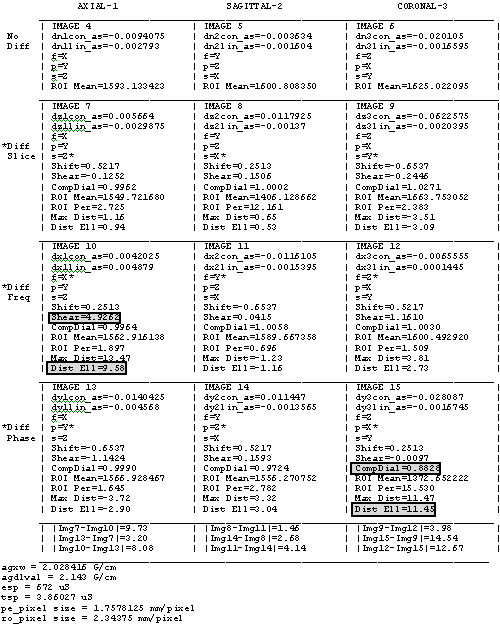
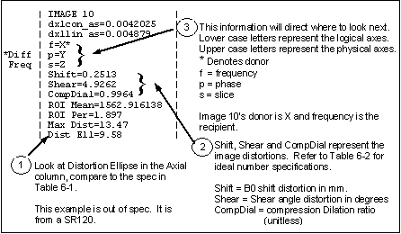

Proprietary to General Electric
Direction 5500113, Rev# 3
Discovery MR750 3.0T Service Methods
Module Version 1.0, Version Date 5/15/07
Proprietary to General Electric |
Illustration 1: TYPICAL ASCII OUTPUT

The ASCII output file (dwepi_check_results, located in /usr/g/service/cclass) is being used as an example for interpreting the results of the DWEPIQ tool scans. The data represents an X on X eddy current problem in a SR120 Gradient Driver System. (Refer to Illustration 1)
For TwinSpeed, check the correct file by its GradMode extension, e.g. dwepi_check_results.ZOOM
Illustration 2: INTERPRETING THE ASCII DATA

Table 1: DISTORTION ELLIPSE (DIST ELL) SPECIFICATIONS
| Gradient Driver System Type | Typical Ranges (Preliminary spec 4.5 mm) |
| SR150 | 1 - 3 mm |
| SR120 | 1 - 3 mm |
| SR77 | 5 - 7 mm |
| *SR20 | 1 - 3 mm |
* SR20 uses ezdwi with ramp samplings.
Table 2: DISTORTION SPECIFICATIONS
| DISTORTION | IDEAL NUMBER |
| Shift (mm) | 0.0 |
| Shear (deg. °) | 0.0 |
| CompDial (unitless) | 1.0 |
The ASCII (Illustration 1) can be used to help decode the numerical output from the test.
Look at the distortion in the ellipse (Dist Ell) values for the Diffusion scans in the Axial column. See Illustration 2.
After locating the image (or images) with the highest value, look at which distortion component (Shift, Shear or Compression/Dilation) is contributing the most to the overall distortion (refer to Table 2).
In Illustration 1, note that Images 10 & 15 have the largest Distortion in the Ellipse (Dist Ell=9.58, Dist Ell=11.45) and the largest components are the Shear angle & the Compression/Dilation (Shear=4.9262, CompDial=0.8828).
The shift error measured in mm is the donor axes dependent only, since B0 currents, which are spatially independent, cause shift. Entire Grafidy procedure would need to be run to correct error.
| NOTE: | In the output file all 3 cells with the same donor axis will exhibit the same amount of shift. (The tool actually averages the shift error from the 3 cells, that’s why the shift number is exactly the same in each of the 3 donor cells.) |
CompDial (Compression Dilation) can be thought of as a ratio of pixel misregistration at the outer edge of the phase FOV (See Table 3).
CompDial > 1.0 (Phase FOV dilated, image compressed)
CompDial < 1.0 (Phase FOV compressed, image dilated)
CompDial = 1.0 (Perfect, no phase FOV error)
Look for the donor/recipient relationship and how the distortion is manifested in the recipient. See Illustration 2.
The donor is the physical gradient axis on which the diffusion lobes are applied. The recipient is the physical gradient axis which experiences the residual eddy current as a result of the diffusion lobe applied on the donor axis.
If the recipient is:
frequency, the distortion will be evident in the Shear distortion
phase, the distortion will be evident in the CompDial distortion ratio
slice, the distortion will be evident in the ROI Per. Note: Typically this will only be evident if the error is very large.
For image 10 (see Illustration 2), physical X was the gradient with the diffusion lobe applied (the donor) and the problem occurred as a shear distortion which meant the recipient of the eddy current problem was on the gradient that acted as the Frequency Encoding gradient (indicated as lower case f) which in this case was also X.
Since the donor and the recipient were upon the same gradient axis (X in this case) this represents a X on X linear eddy current problem.
This evidence is confirmed in the results in image 15 (see ASCII output file at the beginning of this Appendix). Once again X is the donor axis, and here the problem was seen as a compression/dilation problem that indicates the recipient was the phase encoding gradient (indicated as the lower case p). Again the donor and recipient were the same axis indicating a linear X on X eddy current problem.
| NOTE: | Since there appears to be a significant problem with X on X (Linear eddy current), it would be expected to impact (de-phase) the signal when X is used as the Slice Select gradient. However, because of the high signal yield of the Dimethyl silicon phantom this usually isn’t detectable. |
Look to see if there are other lower level indicators.
(Images 9, 12, 13 and 14, of the ASCII output file, show some slight distortion within the ellipse [2.73 to 3.09])
In image 9, Y is the donor and there is some Compression/Dilation which indicates phase encoding gradient was the recipient, in this case demonstrating a Y on X crossterm eddy current.. This hypothesis is confirmed by looking at image 13 where Y is again the donor and there is some Shear distortion indicating the recipient was the Frequency Encoding gradient, in this case X again.
Image 12 indicates the presence of Shear. Z is the donor and recipient in this case, indicating some Z on Z eddy current effect. This is confirmed in image 14 where Z, now acting as the Phase Encoding donor - recipient causes some Compression/Dilation.)
In this example, the biggest problem is the linear X on X eddy current compensation.
Eddy currents in the 100 ms range effect distortions measured with this tool.
These eddy currents are the Long time constants; therefore, any adjustments should be made to the long time constants.
Table 3: CompDial
| pixels in T2 edge phase FOV ________________________ pixels in Diff edge phase FOV | = CompDial |